Revisión completa · toda la web · 27 nov 2026 · rama webs-solidas (commit 4dde6ab)
Rojo, pero por algo fuera de la web
La web en sí está en ámbar: nada se rompe, pero aún no se puede publicar.
He pasado las 15 páginas a 390, 768 y 1440 px, con «reducir movimiento», con teclado, con táctil, sin vídeo, con red lenta y con las cabeceras de seguridad de Vercel. Cero errores en la consola, cero bloqueos de la política de seguridad, ningún enlace interno roto y nada se sale de la pantalla. Los arreglos de hoy se notan: la 404, el foco del menú, el hueco de /work, el escenario con «reducir movimiento» y el peso de About y Cut Scenes.
El rojo viene de una sola cosa ya apuntada que no está en la web: el nombre interno de la plataforma de Roche sigue en main y en el historial del repo público. Esta rama ya lo quitó; falta tu decisión.
Lo que impide publicar la web: 18 marcas a la vista (13 «[PLACEHOLDER]» y 5 «[DRAFT FOR ALI]»), texto tapado en móvil en About y Contact, y la home de caras a 768 px.
De los 24, 8 son nuevos y 16 ya estaban en las revisiones de hoy y siguen abiertos (marcados «ya apuntado»).
Revisado sobre la copia estática (localhost:4331) y la build de Vercel con las cabeceras de vercel.json (localhost:4340), con Chromium sin ventana. Las builds son de las 12:21–12:22, después del último commit del producto. Mientras revisaba, la rama activa del repo pasó a exploracion-lupa; solo cambia exploraciones/, el producto es el mismo.
| Página | Color | Marcas | Por qué |
|---|---|---|---|
| Home | ámbar | 0 | A 768 px una cara sale cortada arriba y otra se pega al titular. Repite «Now» de Work (ya apuntado). Es la home provisional hasta el Bloque 4. |
| Play | verde | 0 | Funciona con ratón, dedo y teclado. Detalles: la lista de casos de abajo a la derecha se lee poco, y los objetos llevan sombra (ya apuntado). |
| Cut Scenes | ámbar | 1 | Con la intro delante, el tabulador va a enlaces tapados (ya apuntado). Bajar la página entera descarga ~15 MB. |
| cutouts | ámbar | 2 | Lo mismo con la intro y el tabulador. El nombre sobre la intro se lee poco a 1440 (ya apuntado). |
| Silena | ámbar | 2 | Las capturas siguen diciendo «Designed by Maria Escarmiento» (ya apuntado). |
| Work | verde | 0 | Bien en los tres anchos; el hueco negro de 1440 ya no está. |
| Roche | verde | 0 | Tu texto, sin nada de la lista prohibida. Limpia. |
| Monexa | ámbar | 3 | Solo por las marcas pendientes. |
| Cupra | ámbar | 2 | Marcas pendientes; «2023–Today» frente a «2026–now» de Roche (ya apuntado). |
| About | ámbar | 0 | En móvil y tablet el bocadillo tapa dos líneas rojas (ya apuntado). Barcelona dos veces (ya apuntado). |
| Contact | ámbar | 0 | En móvil la cara tapa las pistas (ya apuntado). Con teclado hay que pasar por 103 casillas para llegar al chat. |
| How it’s built | ámbar | 5 | Borrador a la vista. Nadie enlaza a ella, pero está en el sitemap y Google la puede encontrar. |
| Library | ámbar | 3 | Solo marcas. Igual: sin enlace, pero en el sitemap. |
| Styleguide | ámbar | 0 | Las notas de los colores siguen en español (ya apuntado). |
| 404 | verde | 0 | Rehecha con el sistema. Detalle técnico en la dirección «canónica». |
Marcas = «[PLACEHOLDER…]» y «[DRAFT FOR ALI]» que se ven en la página. Son a propósito, pero ninguna página con marcas puede ir a main.
main · docs/project-brief.md
«…una familia de productos de plataforma de salud (nombre interno), donde…»esta rama (webs-solidas)
«…una familia de productos de plataforma de salud, donde…» ✓La palabra no se escribe aquí a propósito: este informe también va al repo.
«Abro su GitHub y leo para qué plataforma de Roche trabaja.»
No sale en la web ni en esta rama: aquí ya está quitado. Pero sigue en main y en el historial, y el repo es público. Unir esta rama a main lo quita de la versión actual, no del historial. Está en tu lista de webs-sólidas (punto 1: quitarlo en main y/o poner el repo en privado). Tu decisión: está en la lista de riesgos.
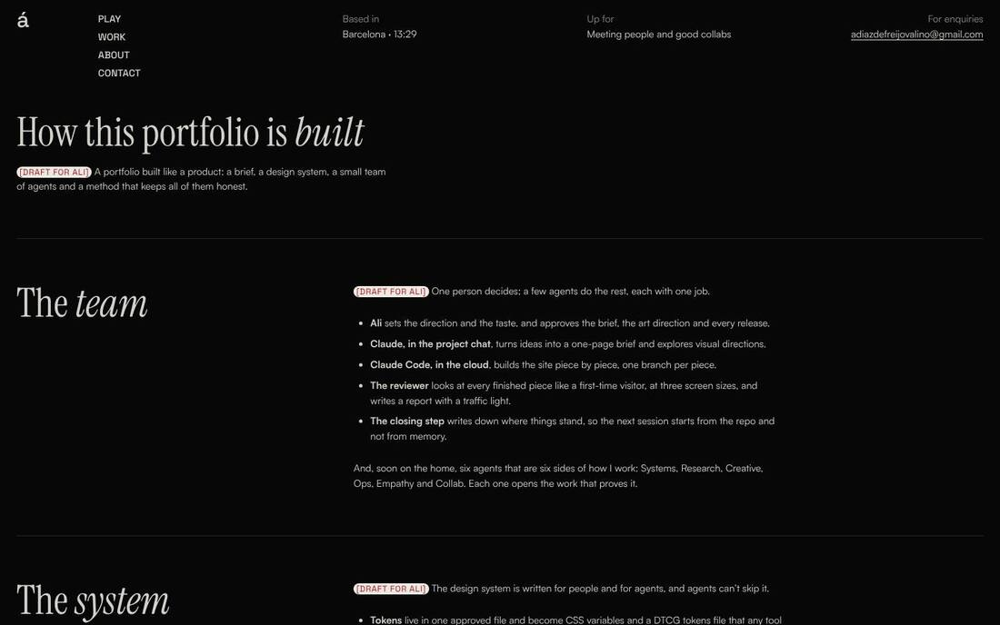
How it’s built a 1440 px. Hay marcas así en 7 páginas.
«¿“PLACEHOLDER: my role in the pitch”? Esto no está acabado.»
El brief pide que no quede ningún «[DRAFT]» ni relleno a la vista. Por página:
| Página | Qué falta |
|---|---|
| How it’s built | 5 × [DRAFT FOR ALI] (todo el texto) |
| Monexa | 3 · el reto, tu papel en el pitch, qué vino después |
| Library | 3 · qué es, por qué, el avance |
| cutouts | 2 · por qué abrirlo a otros, cómo se cortan y escanean |
| Silena | 2 · por qué esta lámpara, qué es tuyo y qué de la plantilla |
| Cupra | 2 · cómo se mueve el trabajo, qué salió (solo lo publicado) |
| Cut Scenes | 1 · qué aprendiste |
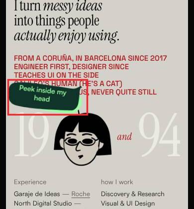
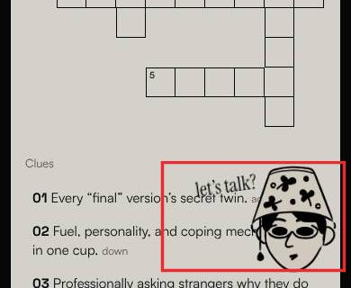
390 px, sin tocar nada. Izquierda: About. Derecha: Contact.
«No puedo leer “Galileo’s human” ni la pista 02: hay algo encima.»
About (390 y 768 px): el bocadillo «Peek inside my head» sale fijo y tapa dos de las líneas rojas. Contact (390 px): la cara del gorro con «let’s talk?» tapa el final de las pistas 01 y 02. Las dos estaban en las revisiones de esta mañana y siguen igual. Es justo el criterio «a 390, 768 y 1440 px no hay nada tapado».
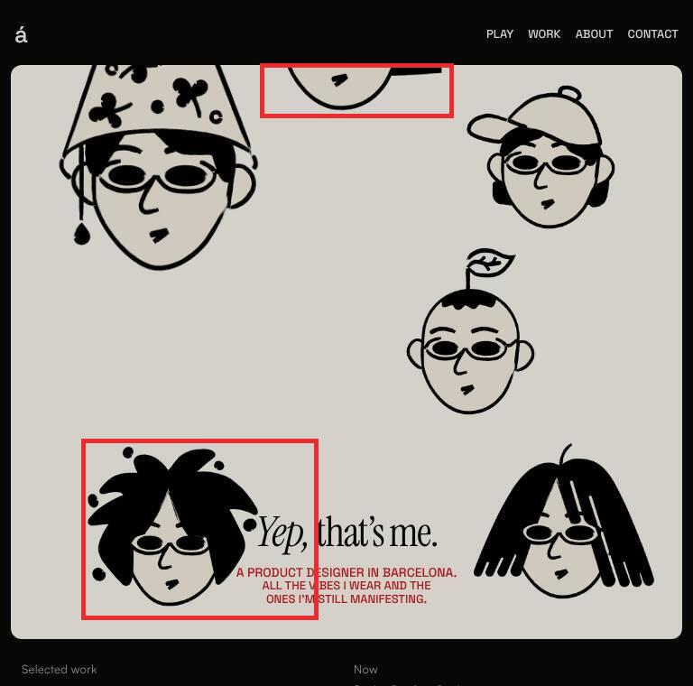
Home a 768 px (tablet en vertical). Arriba, la cara cortada. Abajo, el pelo revuelto pegado a «Yep».
«En el iPad solo veo media cara arriba, y el titular queda pequeño y apretado abajo.»
A 768 px las caras se hacen el doble de grandes que en móvil. La de la media melena («I find peace in naming layers», lleva a About) queda casi entera fuera, por encima del panel; la del gorro sale sin la copa; la del pelo revuelto toca la «Y» de «Yep». El titular se lee, pero pequeño y encajado entre dos caras. A 390 y 1440 px se ve bien. Es la home provisional (la de agentes es el Bloque 4), pero mientras sea la que se publica, no cumple «cada personaje lleva a algo con sentido» en tablet.
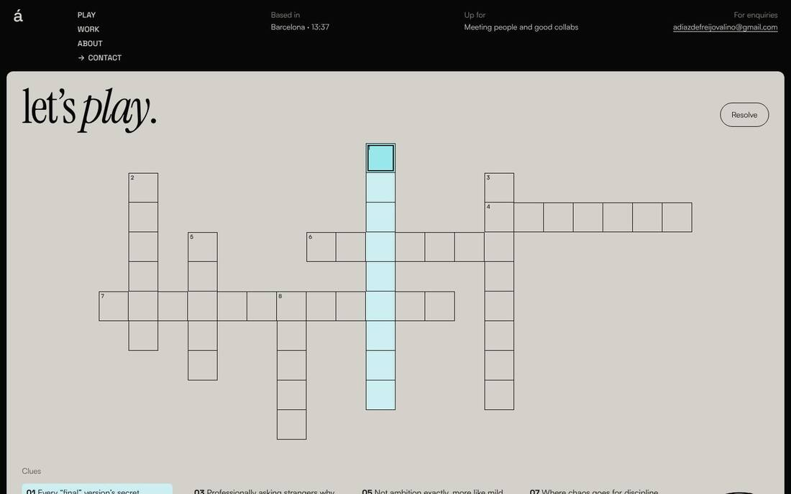
1440 px. El foco se ve bien (la columna se ilumina), pero cada casilla es una parada.
«Navego con teclado y no consigo salir del crucigrama.»
Cada una de las 103 casillas del crucigrama es una parada del tabulador. Para llegar al chat, a LinkedIn o al CV del pie hay que pulsar Tab más de cien veces. No es una trampa (se acaba saliendo), pero es lo contrario de lo cómodo. Lo habitual es que el tabulador entre en el crucigrama una vez y las flechas muevan dentro.
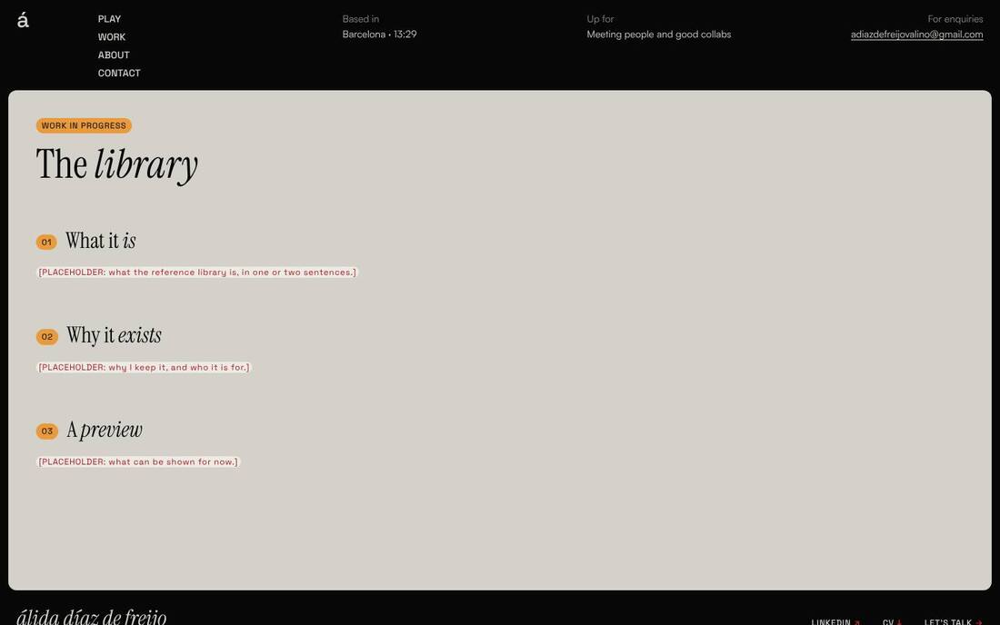
«Busco su nombre y me sale una página llena de [PLACEHOLDER].»
How it’s built y Library no tienen ningún enlace en la web (eso ya estaba apuntado como pregunta para ti). Pero las dos están en el sitemap.xml y la web no pide que no la indexen, así que un buscador puede llegar directo a ellas con sus marcas. En las notas de webs-sólidas está como decisión tuya («noindex mientras no sea el portfolio público»); lo traigo aquí porque afecta a lo que ve un visitante.
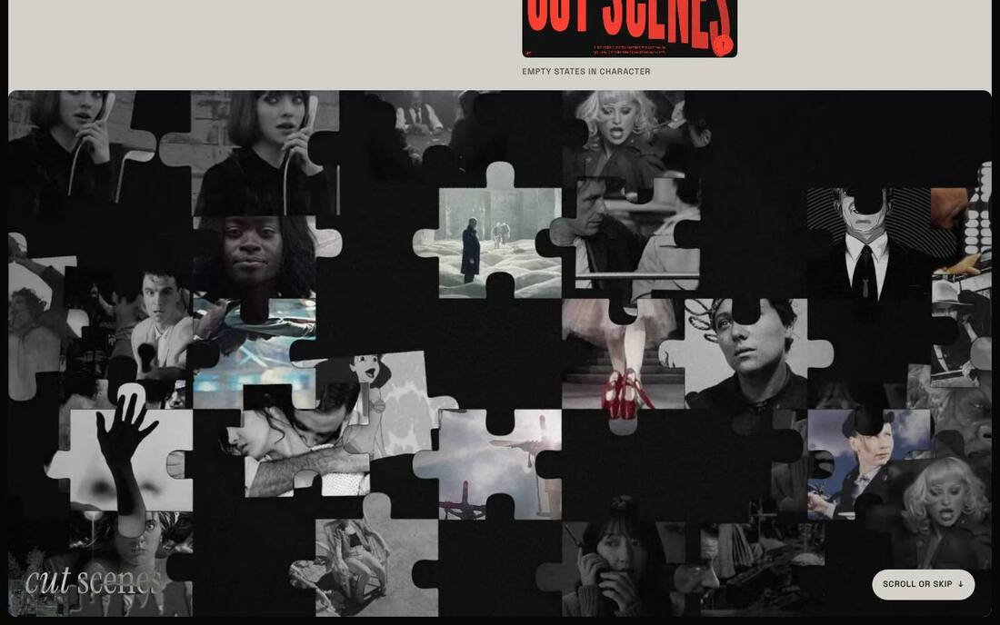
Cut Scenes, 1440 px, cuarta pulsación de Tab con la intro delante.
«Pulso Tab y el foco se va a sitios que no veo.»
En Cut Scenes y cutouts el foco empieza en «Scroll or skip» (bien), pero Tab no cierra la intro: pasa a LinkedIn, CV, Let’s talk, el menú, «View live» y «Next case», casi todos tapados por la película. La intro dura 21–25 s. Esc, Enter, flecha abajo o espacio sí la cierran. Lo subo a «se nota» porque Tab es la primera tecla que prueba cualquiera.
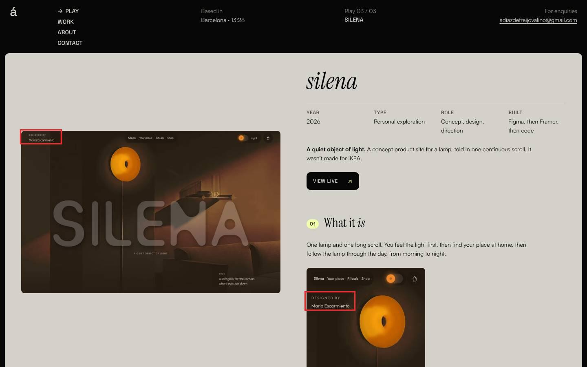
«¿Pero esto no lo diseñó ella?»
Sigue en la captura de portada y en la del móvil. Uno de los placeholders de Silena («qué es tuyo y qué de la plantilla») debería resolverlo, pero mientras tanto la imagen dice otra cosa que el texto.
Sin captura
«Barcelona» en la cabecera, en la home y en la primera línea roja de About. «Senior Product Designer · Garaje de Ideas, for Roche» en el «Now» de la home y en la fila de Roche de /work. La frase de cada empresa en /work y en el «Next case». La repetición del capítulo Context de Cupra que había esta mañana ya no está.
Sin captura
Sigue mezclando «Ali sets the direction… without Ali’s yes» con «how I work». Lo de la home de agentes ya dice «soon», así que eso está resuelto.
Sin captura
About sigue sobre papel y con tamaños de letra propios (21 fuera de la escala según la auditoría). Pendiente de tu respuesta: ¿About pasa a la plantilla de página larga?
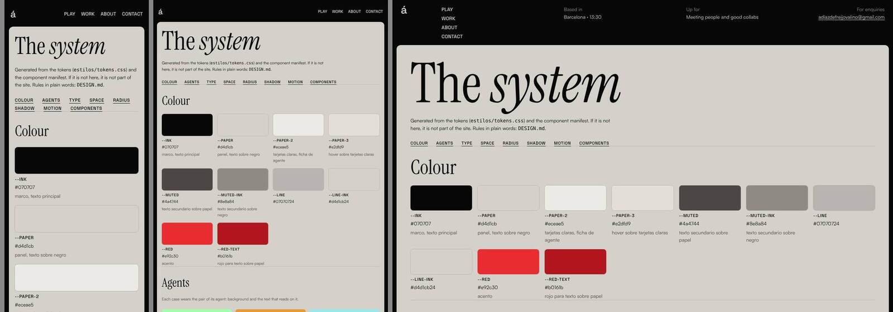
«marco, texto principal», «rojo para texto sobre papel»… Vienen tal cual de estilos/tokens.css.
Sin captura
La de Cut Scenes son 6,7 MB (AV1) y la de cutouts 9,3 MB (20 MB en MP4). Con red lenta (1,6 Mbps) Cut Scenes tarda 8 s en terminar de cargar, aunque el póster sale enseguida. Sigue en la lista de «volver a exportar desde el original».
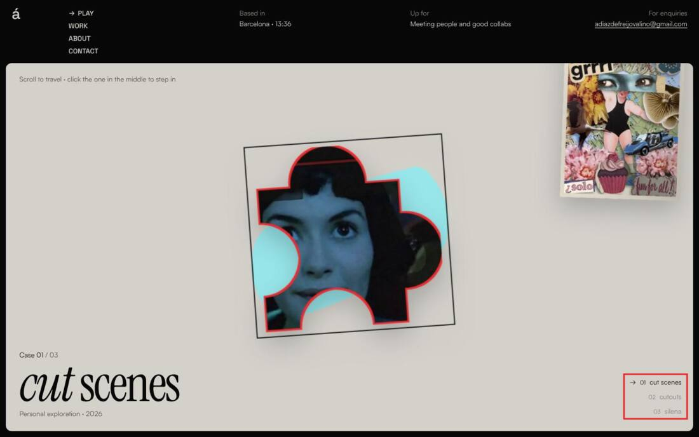
«02 cutouts» y «03 silena» en gris claro sobre papel: 2,6 de contraste (para texto pequeño se pide 4,5). Son botones, no decoración.
Sin captura
Los «02», «03», «04» de las pestañas no activas quedan en 2,7 de contraste.
Sin captura
Técnico, no lo ve nadie. La 404 dice que su dirección oficial es /404/ (lo normal es que no diga ninguna o pida no indexarse). Y el sitemap da las direcciones sin barra final (/work) mientras cada página dice que la suya lleva barra (/work/). A Google le da igual casi siempre; conviene que coincidan.
Sin captura
Con JavaScript apagado (raro), Cut Scenes y cutouts se quedan con la intro encima y el botón «Scroll or skip» no hace nada. Solo he mirado sin JavaScript la home, Play, Contact, About y Cut Scenes.
Sin captura
Al abrir baja 1,35 MB (bien, como prometía el arreglo). Si bajas hasta el final, los vídeos de los capítulos suman ~15 MB en móvil y escritorio. Monexa: 1,9 MB al abrir, ~5,5 MB entera. No es un fallo (se bajan solo al acercarse), pero en datos móviles se nota. Mejorará con las reexportaciones.
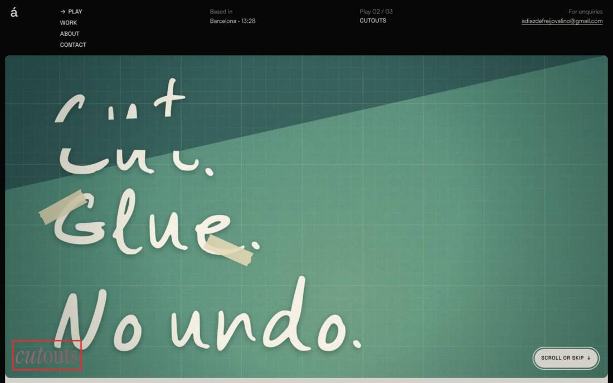
Rosa apagado sobre el tapete verde.
Sin captura
En la home y en /work. Además, según su ficha, Cupra es 2023–2026 y el texto de Cupra habla en presente.
Sin captura
Los objetos de /play y las caras de la home llevan sombra. Las reglas solo la permiten en la ficha del agente. Tu decisión.
Sin captura
La máscara que difumina el chat por arriba es un degradado, y las reglas no los permiten. Quitarlo cambia cómo se ve: tu decisión.
Sin captura
Los bocadillos siguen con los tonos sacados del Framer, y el aro de foco de las caras es el granate del sistema viejo (se ve bien sobre papel). Se va con el Bloque 4.
Sin captura
La primera pulsación va a LinkedIn, CV y Let’s talk y solo después vuelve arriba.
Cosas que esta mañana estaban mal y ya están bien. Izquierda, la revisión de antes; derecha, ahora.
404 · ahora con el titular en serif y los botones del sistema
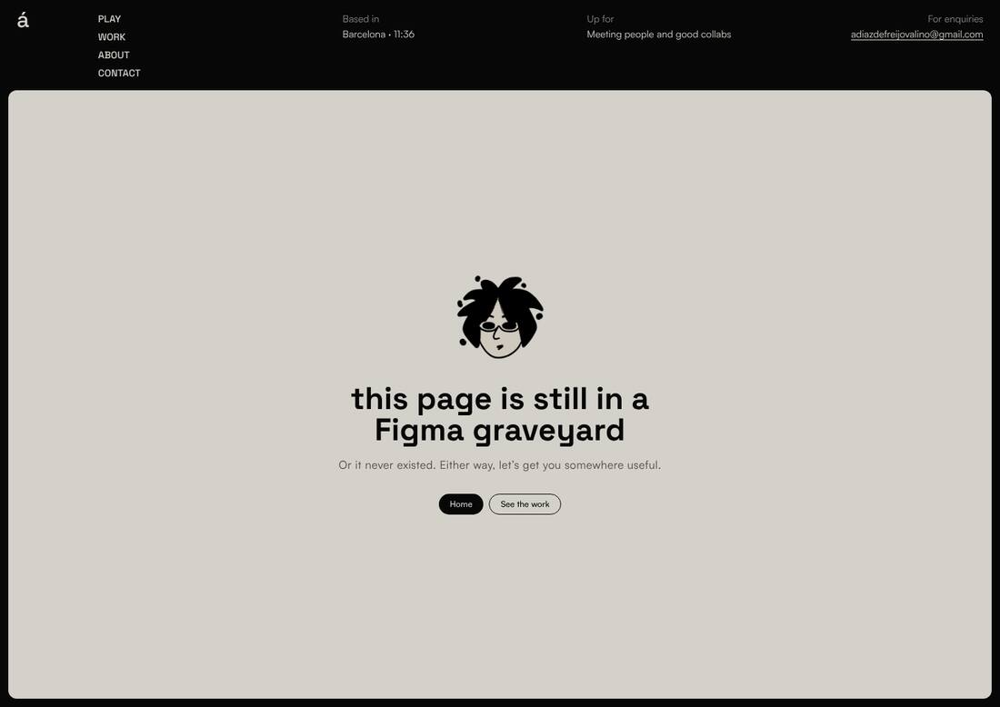
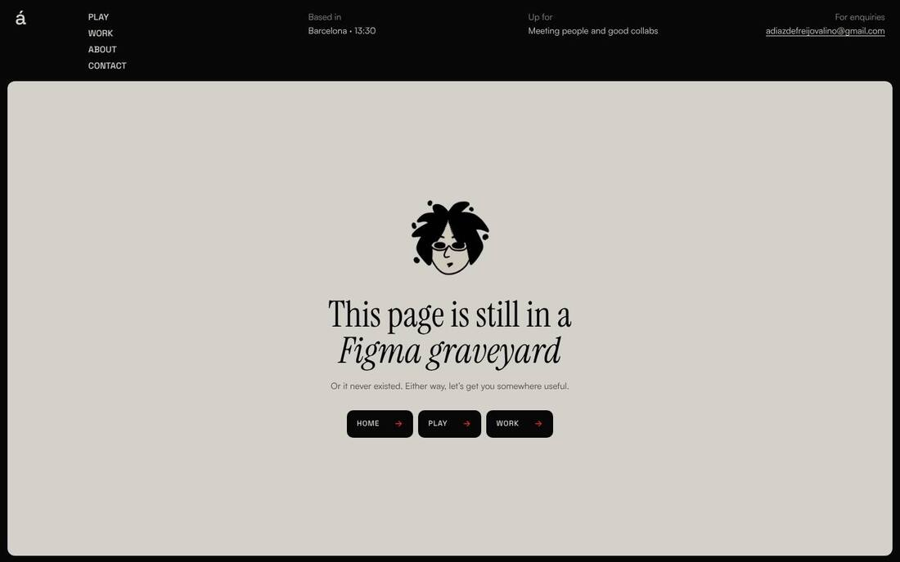
Foco del teclado en el menú · de granate casi invisible a un aro claro
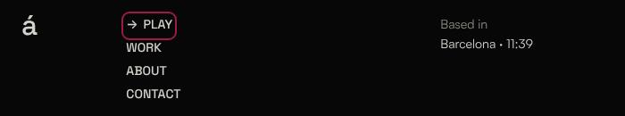
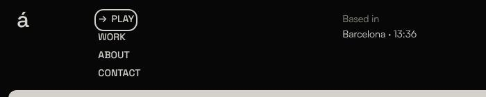
/work a 1440 px · sin hueco negro y con aire bajo el título
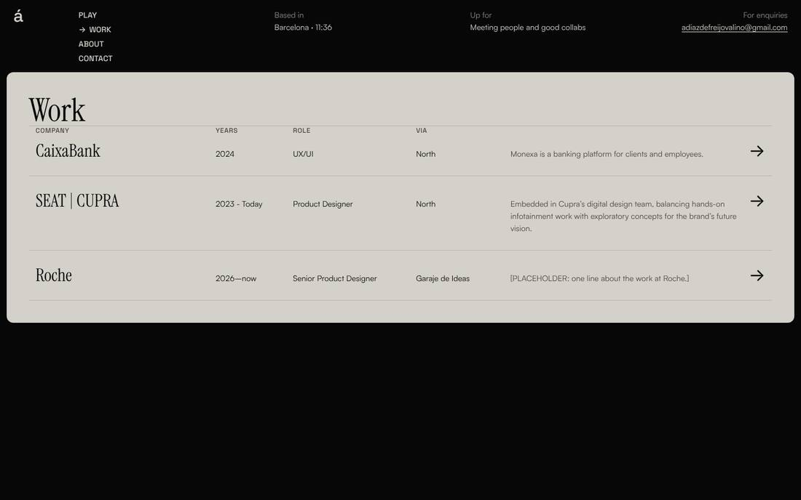
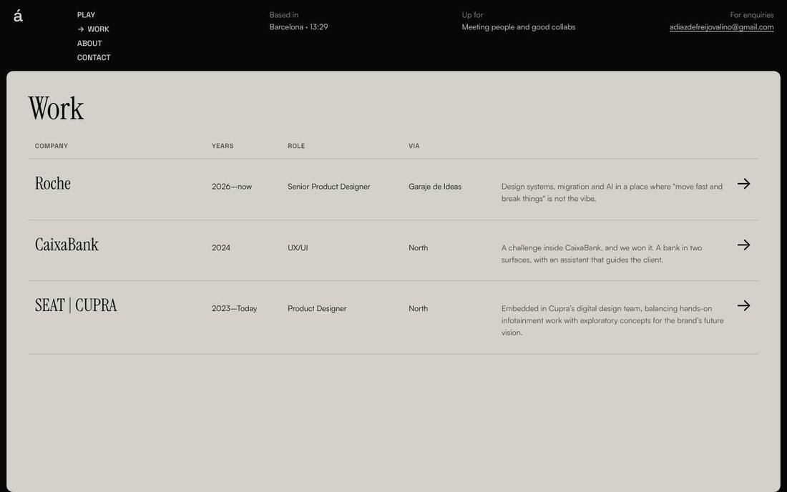
Cut Scenes con «reducir movimiento» · antes el clic iba a un vídeo invisible; ahora el clic cae en el vídeo que ves
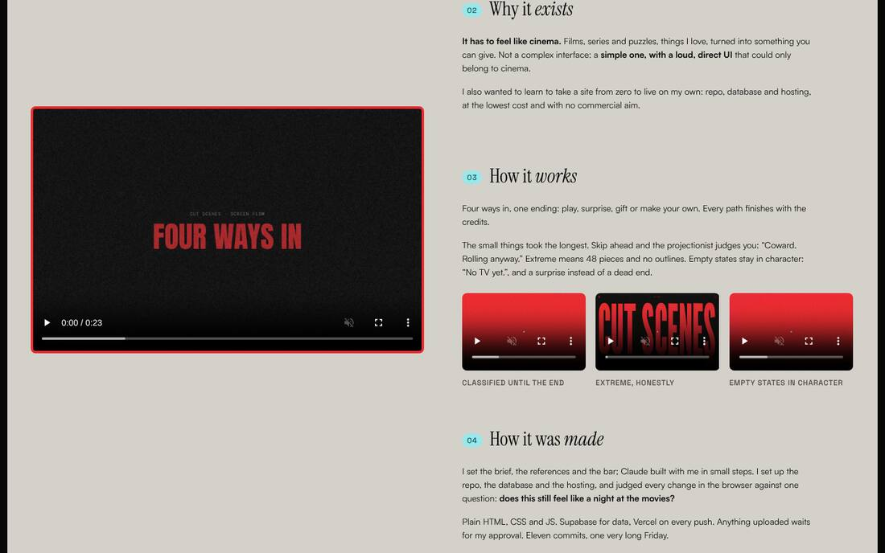
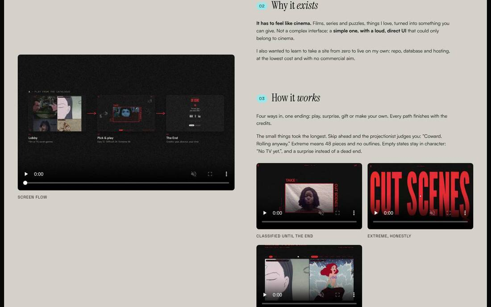
Y sin captura: el borde negro bajo el pie de How it’s built a 768 px ya no está; About pasa de 4,3 MB a 0,19 MB al abrir; Cut Scenes abre con 1,35 MB (antes 4 MB) y no baja vídeos escondidos; con «reducir movimiento» no se baja ninguna película hasta que la pides.
| Criterio | Estado |
|---|---|
| En la home se lee el titular entero y cada personaje lleva a algo con sentido | A 390 y 1440 sí; a 768 una cara sale cortada (hallazgo 4). Toque en móvil: primer toque enseña el bocadillo, el segundo abre el caso. La home de agentes es el Bloque 4. |
| En el menú se ven Play y Work, y cada caso abre con su plantilla | Sí, en los tres anchos. Tres casos Play y tres Work con su plantilla y su color. |
| Ningún dato sale dos veces y no hay «[DRAFT]» ni relleno | No: 18 marcas y algunos datos repetidos (hallazgos 2 y 9). |
| Vídeos nítidos en Retina y que cargan en móvil | Por tamaño, sí: cada vídeo y cada imagen tiene píxeles de sobra para su caja a 2× y 3×. Cargan en móvil en Chromium. Las intros siguen pesadas y faltan reexportaciones. Sin iPhone real. |
| A 390, 768 y 1440 px nada tapado, cortado ni desbordado | Nada se desborda en ninguna página. Tapado: About y Contact en móvil; cortado: la home a 768. |
| LinkedIn y el CV desde cualquier página | Sí, en el pie de las 15 páginas. El CV descarga. |
| El revisor no marca nada como «rompe algo» | Uno, fuera de la web y ya apuntado (hallazgo 1). |
vercel.json (URLs sin .html), cero bloqueos de la política de seguridad en las 15 páginas a 1440 y 390, abriendo el collage de About, escribiendo en el crucigrama, pulsando el chat, quitando las intros y reproduciendo vídeos. Una dirección que no existe devuelve la 404 con su código de error.npm run check pasa (55 tokens, deuda 184). Tres familias de letra en todas las páginas rehechas y los cinco tamaños de la escala en casos, Work, How it’s built, Library y 404. Los componentes del styleguide se ven igual en las páginas (tarjeta de título, capítulos, botón, vídeo, Next case, pie).390 · 768 · 1440 px, lo primero que se ve al entrar. En los casos de Play, con la intro delante.
Home
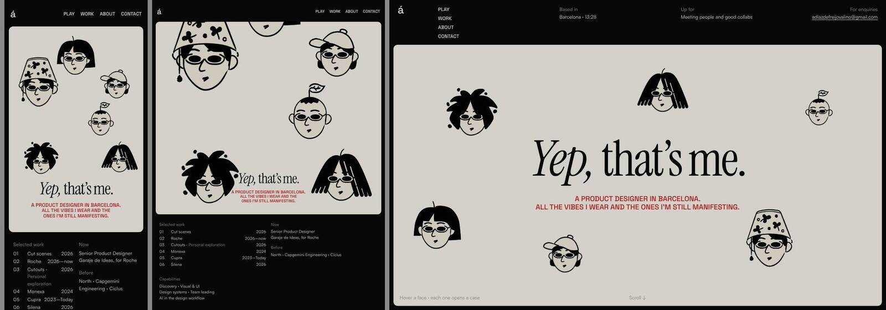
Play
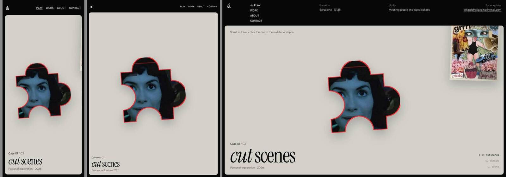
Cut Scenes
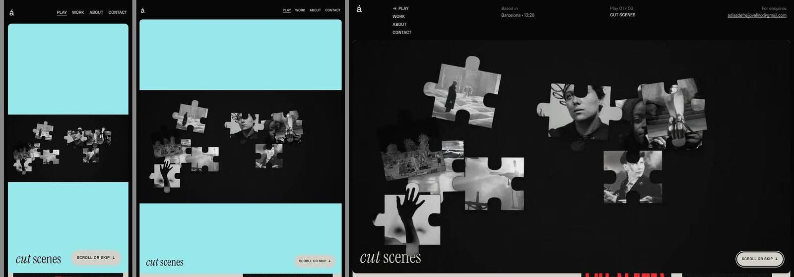
cutouts
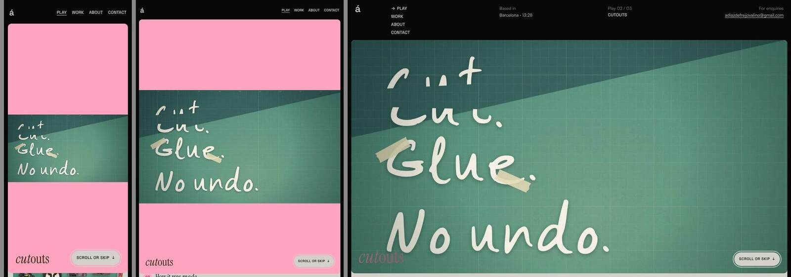
Silena
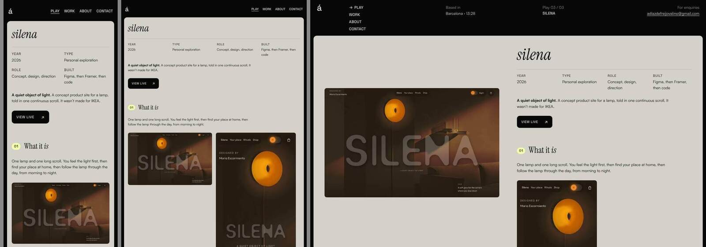
Work
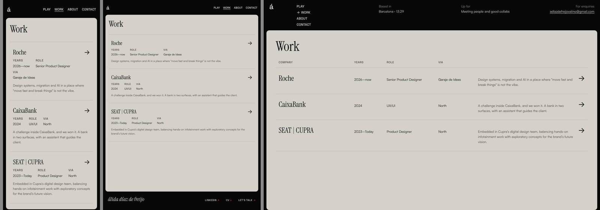
Roche
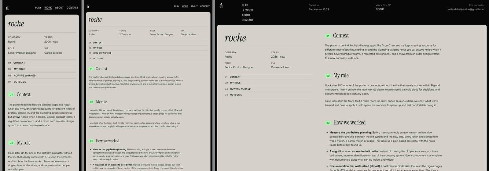
Monexa
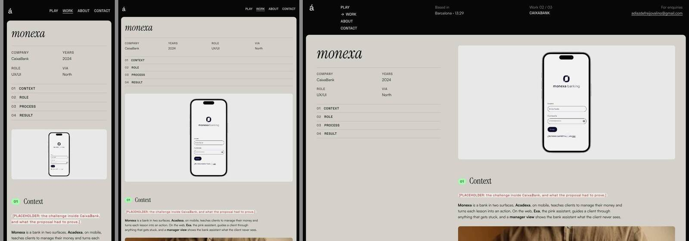
Cupra
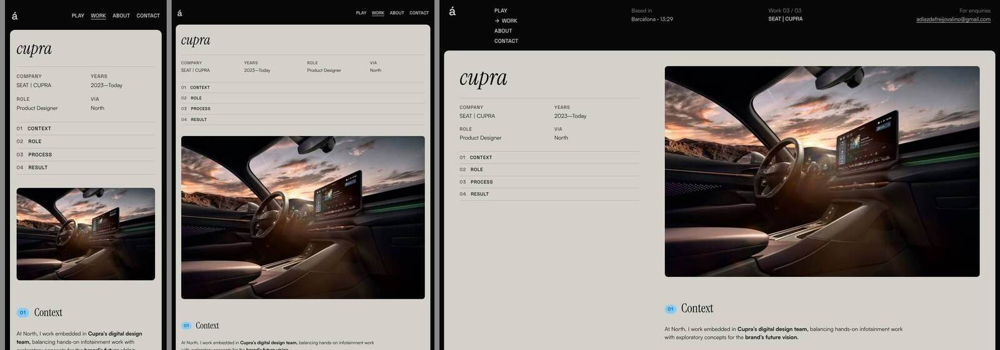
About
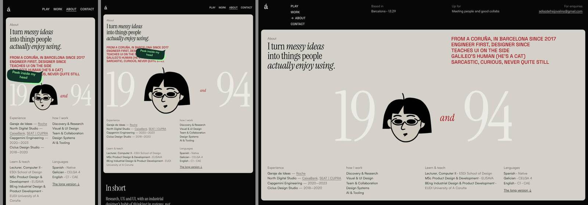
Contact
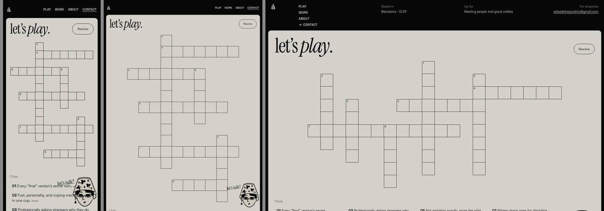
How it’s built
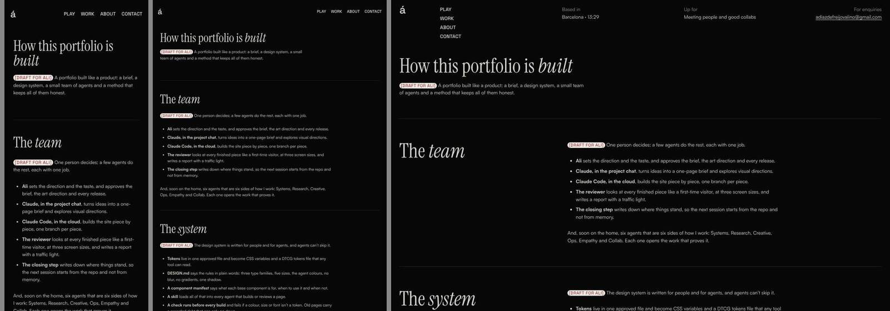
Library
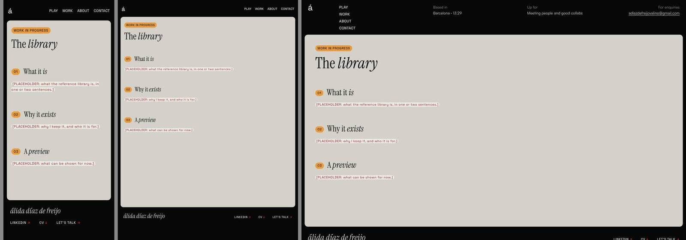
Styleguide
404
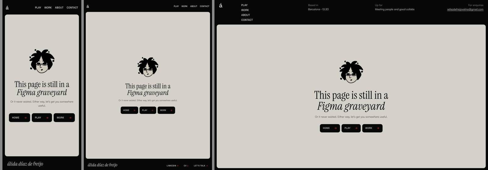
Con «reducir movimiento» · 1440 px
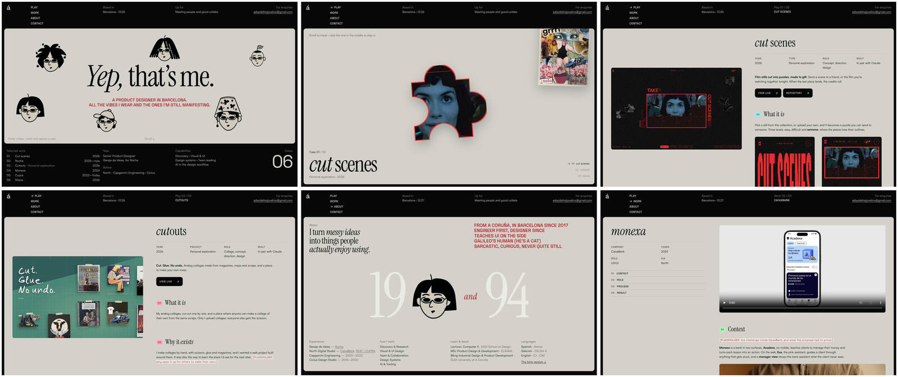
Con «reducir movimiento» · 390 px
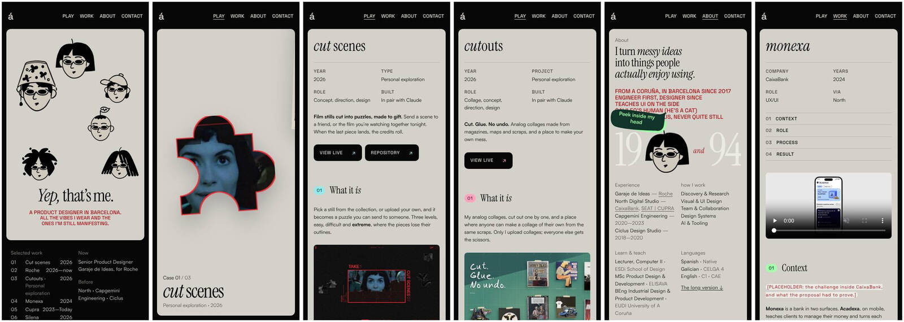
Sin vídeo · la intro deja su póster
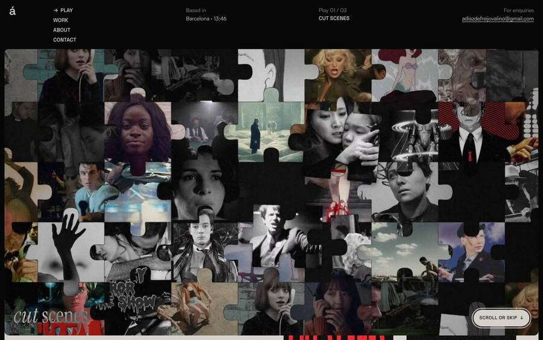
| Página | Al abrir | Tras bajar entera |
|---|---|---|
| Home | 0,44 MB | igual |
| Play | 0,34 MB | igual |
| Cut Scenes | 1,35 MB | ~15,6 MB |
| cutouts | 0,31 MB + la intro (6,7–9,3 MB según formato) | igual |
| Silena | 0,27 MB | igual |
| Work · Roche | 0,15 MB · 0,15 MB | igual |
| Monexa | 1,9 MB | ~5,5 MB |
| Cupra | 0,50 MB | igual |
| About · Contact | 0,19 MB · 0,24 MB | igual |
| How it’s built · Library · Styleguide · 404 | 0,13–0,24 MB | igual |
Medido en Chromium. Los vídeos que se bajan poco a poco mientras suenan se cuentan solo en parte, así que las cifras con vídeo son aproximadas (por abajo).
vercel.json; ese servidor quita «upgrade-insecure-requests» (es http) y no sirve los vídeos por trozos como Vercel.Revisor · 27 nov 2026 · capturas en JPEG en esta misma carpeta.